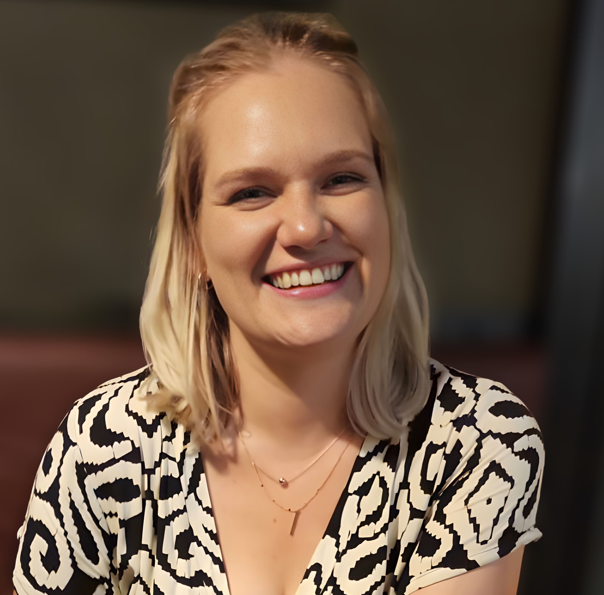
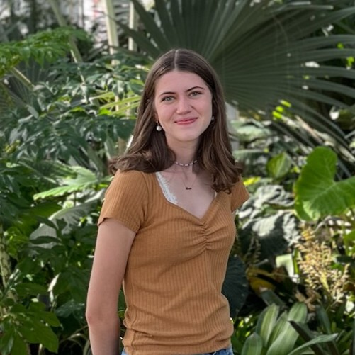
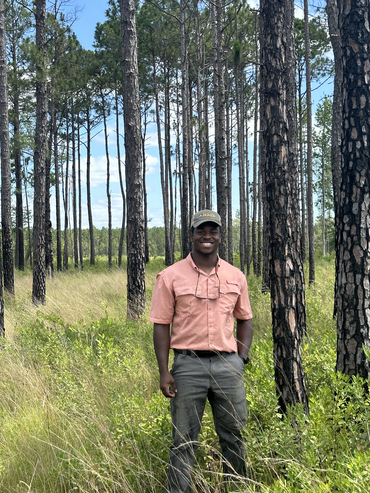

Meet the Team
Principal Investigator
Jeffrey W. Doser
Assistant Professor
- PhD Forestry and Ecology, Evolution, and Behavior, Michigan State University, 2022
- MS Applied Statistics, Michigan State University, 2021
- BS Mathematics and Biology, State University of New York at Geneseo, 2018
I am a statistical ecologist interested in the development and application of hierarchical Bayesian models for forest and wildlife management and conservation. I am an Assistant Professor of Quantitative Forest Science at North Carolina State University in the Department of Forestry and Environmental Resources. Prior to joining NC State, I worked as a postdoctoral research associate in the Department of Integrative Biology at Michigan State University in Dr. Elise Zipkin's Quantitative Ecology Lab. I received my PhD in Forestry and Ecology, Evolution, and Behavior at Michigan State University in the Geospatial Lab of Dr. Andrew Finley.
Email · (919) 513-1248 · GitHub · Google Scholar · CV
Current Lab Members

Michelle Pretorius
Postdoctoral Research Scholar
- PhD Conservation Biology, University of Cape Town, 2024
- MSc Conservation Biology, University of Cape Town, 2019
- BSc Conservation Biology, Ecology and Evolution and Applied Biology, University of Cape Town, 2016
I'm a quantitative ecologist broadly interested in the conservation of biodiversity and wildlife on working lands, with forestry landscapes as a prime example. I'm currently a Postdoctoral Research Scholar in the Department of Forestry and Environmental Resources at North Carolina State University. I completed my PhD in Conservation Biology at the University of Cape Town, South Africa, in the Institute for Communities and Wildlife in Africa (iCWild), supervised by Prof. Justin O'Riain. My PhD was also a collaboration with the SHOALgroup at Swansea University, UK, and was co-supervised by A/Prof. Andrew King and A/Prof. Ines Fürtbauer. My research focused on bark-stripping behaviour in wild chacma baboons living in commercial forestry systems, using GPS and accelerometer biologgers to understand their movement patterns and damage-causing behaviours.

Alexa Busby
PhD Student
- PhD Fisheries, Wildlife and Conservation Biology, North Carolina State University, in progress
- BS Biology and Environmental Science, William & Mary, 2025
I am a doctoral student in the Fisheries, Wildlife, and Conservation Biology (FWCB) program and a Southeast Climate Adaptation Science Center (SECASC) Global Change Research Fellow at North Carolina State University. I am interested in using quantitative methods to understand how forest management strategies impact wildlife biodiversity. I strive for my research to have direct application to wildlife policy and conservation efforts. I completed my B.S. in Biology and Environmental Science at William & Mary with an honors thesis supervised by Dr. Matthias Leu. My honors thesis focused on identifying the predominant factors that influence salamander abundance and species diversity in forested streams. While at W&M, I also completed the Conservation Research Program, where I used spatial methods and citizen science to identify hotspots of wildlife-vehicle collisions in northern Virginia.

Darius Ledbetter
PhD Student
- PhD Forestry and Environmental Resources, North Carolina State University, in progress
- MS Forestry (Statistics Minor), North Carolina State University, 2025
- BS Environmental Technology and Management, North Carolina State University, 2023
I am a doctoral student in Forestry and Environmental Resources as well as the District 8 Student Executive Committee for the Society of American Foresters. I have a strong passion for utilizing sustainable practices to help stakeholders make decisions for Forestry and Ecology focused questions. My Masters thesis was focused on validating the Forest Vegetation Simulator (FVS) for loblolly pine plantations in North Carolina using Forest Inventory and Analysis (FIA) Data.
Elijah Young
M.S. Student
- MS Forestry, North Carolina State University, in progress
- BS Fisheries, Wildlife, and Conservation Biology and Enviornmental Science, North Carolina State University, 2026
I am a masters student in Forestry, currently working on updating the Loblolly Decision Support System (LobDSS), which is a piece of software that allows landowners to better manage loblolly pine plantations. While I was an undergraduate student, I worked with private landowners in South Carolina predicting bobwhite quail populations and songbird occupancy using Bayesian modeling. For that project, I created an R shiny application that allowed stakeholders without a technological background to run these models themselves for future years of data collection.
Alumni
Robbie Howell, Undergraduate Researcher, 2025
Maya Shaver, Undergraduate Researcher, 2025